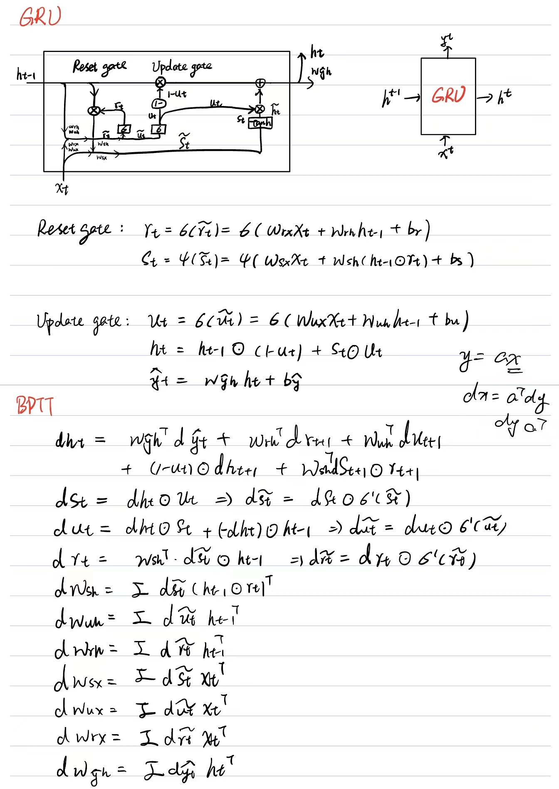

MLP (Multiple Layer Perceptron)

Back Propagation:
$\delta^L$ = $\nabla_a C\odot\sigma^{‘} (Z^L)$
$\delta^l$ = $((W^{l+1})^{T}\delta^{l+1})\odot\sigma^{‘} (Z^l)$
$\frac{\partial C}{\partial W_{jk}^l}$ = $a_k^{l-1}\delta_j^l$
$\frac{\partial C}{\partial b^l}$ = $\delta_j^l$

RNN (Recurrent Neural Network)


LSTM (Long Short-Term Memory)
Back Propagation Through Time
GRU (Gate Recurrent Unit)
Back Propagation Through Time
